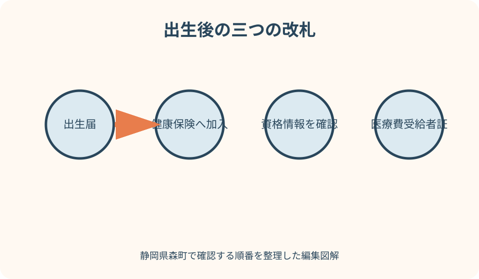
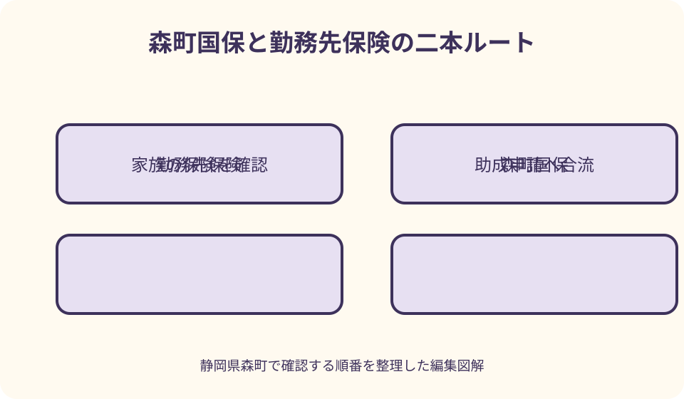

妊娠・子育て手続｜最終確認 2026-08-10
静岡県森町で赤ちゃんの健康保険加入｜国保・勤務先・こども医療費助成の順序
赤ちゃんが生まれた後は、出生届、健康保険の加入、森町こども医療費受給者証の交付申請を別々に管理します。出生届を出しただけでは、勤務先の健康保険へ自動的に被扶養者登録されるわけではありません。森町国保なら住民生活課国保年金係、被用者保険なら保護者の勤務先等が入口です。加入先を確定し、赤ちゃんの資格情報を得た後、健康こども課で医療費助成を整える順に進めます。

編集イラスト最初に結論：出生届・保険加入・医療費助成は三つの手続
赤ちゃんの出生後に行う手続は、一列に並べると理解しやすくなります。第一が出生の事実を届ける出生届、第二が医療保険へ加入する手続、第三が森町こども医療費助成の受給者証交付申請です。
出生届は戸籍と住民登録に関する届出で、森町では住民生活課住民係が窓口です。健康保険は、森町国保なら国保年金係、保護者の被用者保険なら勤務先等へ申し込みます。
こども医療費助成は健康保険そのものではありません。保険診療の自己負担を森町が助成する制度で、対象確認と受給者証の交付は健康こども課こども家庭係が担当します。
一日に役場で複数の窓口を回れても、勤務先保険の審査や資格情報の反映には別の時間がかかり得ます。誰が、どこへ、何を提出し、何の完了を待っているかを家族で共有します。
出生届は健康保険加入の前提資料を整える手続
森町公式は、出生届を父母の本籍地または所在地、子の出生地のいずれかの市区町村役場へ届けるよう案内しています。森町の窓口は住民生活課住民係です。
出生届の用紙は出生証明書と一体で、通常は出産した医療機関や助産所から受け取ります。母子健康手帳も持参し、出生届出済証明書欄への記載を受けます。
出生届は生まれた日から起算して14日以内と森町公式に掲載されています。ただし国外出生など別の扱いがある場合は、該当する市区町村へ早めに確認します。
出生届を受理された事実は保険申請に必要な氏名、生年月日、続柄等を整える基礎になりますが、被用者保険の被扶養者届まで町が代行するわけではありません。次の窓口へ進む必要があります。
加入先は家族の現在の保険から決める
赤ちゃんの加入先を決めるときは、父母それぞれが加入する保険の名称、勤務先、保険者名を確認します。『会社員だから社会保険』という呼び方だけでは提出先を特定できません。
父母の一方が協会けんぽ、健康保険組合、共済組合などへ加入している場合は、その子を被扶養者にできるか勤務先等へ確認します。認定条件は加入先保険者が判断します。
世帯が森町国保で、赤ちゃんが他の医療保険の被扶養者にならない場合は、森町国保への加入を国保年金係へ届けます。国保には会社の健康保険のような『扶養』の扱いがないため、赤ちゃん自身が加入者になります。
父母が異なる被用者保険へ入っている場合は、どちらの被扶養者にするかを両方の勤務先へ早めに相談します。収入比較や保険者間の基準を家庭だけで決めず、必要資料と認定先を確定します。
森町国保へ加入する場合の入口
森町公式は、子どもが生まれたときに国民健康保険の異動届が必要となる場合を示しています。窓口は森町役場の住民生活課国保年金係です。
厚生労働省は、国保の被保険者になったときは14日以内に住所地の市町村国保窓口へ関係書類を提出する必要があると案内しています。出生届の期限と同じ数字でも、別の届出として確認します。
必要書類は世帯状況や情報連携によって変わる可能性があります。出生届と同日に手続できるか、世帯主の本人確認書類、マイナンバー関係資料など何が必要かを国保年金係へ事前に尋ねます。
マイナ保険証の利用登録がある世帯でも、国保への加入届を省略できるとは限りません。森町公式も異動時は手続が必要と注意しているため、自動加入と思い込まないようにします。

国保の資格取得日と届出日を混同しない
保険資格がいつから始まるかと、窓口へ届出をした日は同じ言葉ではありません。出生に伴う資格取得日を国保年金係へ確認し、受付日だけを家族の記録へ残さないようにします。
届出が遅れた場合にどの期間の負担が生じるか、受診済み医療費をどう扱うかは個別確認が必要です。遅れに気付いたら、理由と受診の有無を伝えて早めに相談します。
国保税は世帯単位で扱われますが、赤ちゃんだから必ず追加負担がない、または一定額になると記事から決められません。賦課内容や軽減は国保年金係へ確認します。
資格取得の確認後は、マイナ保険証の登録状況に応じて交付・通知される物が異なります。資格確認書または資格情報のお知らせなど、赤ちゃんの受診時に示す方法を聞きます。
勤務先の健康保険へ被扶養者として届ける場合
協会けんぽの被保険者が子を扶養へ追加する場合、被保険者は勤務先を通じて健康保険被扶養者（異動）届を提出します。本人が森町役場へ届ける国保手続とは提出経路が違います。
日本年金機構の案内では、被扶養者認定の届出時期は事実発生から5日以内とされています。会社の休業日や出生後の書類発行もあるため、出産前に人事・総務へ提出方法を聞いておくと動きやすくなります。
健康保険組合や共済組合など協会けんぽ以外では、勤務先と各保険者の様式・添付書類に従います。協会けんぽの必要書類をそのまま別の保険者へ当てはめません。
扶養認定は保険者の確認を経て決まります。申請書を会社へ渡した日、会社が受け付けた日、認定日、資格情報が確認できた日を分けて記録します。
被扶養者届の氏名・続柄・個人番号
被扶養者届には赤ちゃんの氏名、生年月日、続柄、住所、個人番号など正確な情報が必要です。出生届で確定した表記と同じか、漢字、ふりがな、日付を照合します。
日本年金機構は、続柄確認書類として戸籍謄抄本や住民票の写しを示しつつ、個人番号の記載と事業主の確認等により省略できる場合も案内しています。実際の添付は勤務先へ確認します。
赤ちゃんは収入がないから書類は何も不要、と自己判断しないようにします。16歳未満では収入要件確認資料を原則省略できる場合がありますが、届出自体や他の確認は残ります。
個人番号を家族のメッセージへ平文で送る、申請書の写真を共用端末へ残すなどの扱いは避けます。勤務先が指定する安全な提出方法と本人確認手順を使います。
両親とも勤務先保険なら先に認定先を確認する
父母がそれぞれ別の勤務先保険へ加入しているときは、同じ赤ちゃんを双方へ同時に被扶養者申請してよいとは限りません。両方の人事担当へ出生と相手方の加入状況を伝えます。
主として生計を維持する人を判断する際、年間収入の見込みなどを求められることがあります。産休・育休による一時的な給与変化の扱いも、保険者へ確認する項目です。
一方の勤務先が『もう一方へ聞いてください』と答えた場合は、回答日と根拠を記録し、必要なら保険者同士の確認手順を尋ねます。家庭で空白期間を作らないための相談です。
認定先が決まったら、申請しなかった側の勤務先にも必要な連絡があるか確認します。税務上の扶養、会社の家族手当、健康保険の被扶養者は同じ判定とは限りません。
マイナ保険証と資格確認書を正しく理解する
2026年時点では、従来型の健康保険証ではなく、マイナ保険証や資格確認書等で資格を示す仕組みが中心です。町公式の古いページ表現だけで持ち物を判断せず、更新された案内を確認します。
マイナ保険証は、保険加入申請そのものではありません。赤ちゃんのマイナンバーカード取得や利用登録と、国保加入または被扶養者認定の手続を別に進めます。
協会けんぽは、マイナ保険証を持たない加入者でも資格確認書を医療機関へ提示して受診できると案内しています。交付方法と時期は加入先によって異なるため、保険者へ尋ねます。
森町のこども医療費助成では、資格情報のお知らせ、資格確認書、マイナポータルからダウンロードした資格情報画面を健康保険情報が分かる物として例示しています。提出可能な形を窓口へ確認します。
こども医療費助成は保険加入後に整える
森町こども医療費助成は、森町に住所があり、健康保険の扶養となっている0歳から高校生世代までの子どもを対象とする案内です。出生した赤ちゃんも条件確認と申請が必要です。
受給者証の新規交付申請では、保護者と子どもの健康保険情報が分かる物を用意します。赤ちゃんの加入先が未確定なら、何を先に提出できるか健康こども課へ相談します。
健康保険の資格が確認できたことと、こども医療費受給者証が手元にあることは別の完了です。両方の状態を家族の一覧に分け、受診時に必要な提示物を確認します。
町公式は県内医療機関等で受給者証を毎回提示するよう案内しています。保険外の健診、予防接種、文書料などは助成対象外とされ、医療費がすべて無条件で無料になる制度ではありません。
役場内の窓口を一枚の順路にする
森町で出生届を出すなら、最初の相談先は住民生活課住民係です。国保加入に該当する家庭は同じ住民生活課の国保年金係へ進みます。
勤務先保険の家庭は、役場で加入処理が完了するわけではありません。出生届後に勤務先へ必要情報を渡し、被扶養者認定と資格情報の発行・反映を待ちます。
こども医療費受給者証は保健福祉センター内の健康こども課こども家庭係が窓口です。役場本庁と保健福祉センターの場所や受付時間を確認し、移動を予定へ含めます。
窓口ごとに『提出済み』『追加資料待ち』『資格確認待ち』『受給者証交付済み』の印を付けます。一つの窓口で控えを受け取っただけで全工程を完了扱いにしません。

出生後すぐ受診が必要になった場合
赤ちゃんの保険資格情報や受給者証が届く前に受診が必要になることはあります。必要な受診を事務書類だけを理由に延期せず、まず医療機関へ状況を伝えます。
受付では、出生直後で保険加入を申請中であること、加入予定の保険者、申請日、こども医療費受給者証も準備中であることを説明します。支払方法と後日必要な物を確認します。
領収書はレシートだけで済ませず、保険診療分を確認できる明細と一緒に保管します。保険者への療養費請求が先になる場合や、町への払い戻し申請が必要な場合があるためです。
後から必ず全額戻るとは断定できません。資格取得日、保険給付の対象、森町助成の対象、申請期限によって扱いが異なるため、加入先保険者と健康こども課の双方へ確認します。
受給者証を提示できなかったときの払い戻し
森町公式は、受給者証を忘れた場合や県外医療機関で受診した場合、いったん保険診療分の自己負担額を支払い、後に払い戻しを申請する案内を掲載しています。
持ち物として認印、受給者証、保険診療分が確認できる領収書、子どもの健康保険情報が分かる物、保護者名義の通帳が示されています。申請時の最新要件を確認します。
高額療養費や付加給付など保険者から別の給付を受けられる場合は、その手続が先になることがあります。給付決定通知など支給額が分かる資料を保管します。
申請期限を過ぎないよう、受診日、保険者への請求日、支給決定日、町への申請日を別々に記録します。出生直後の受診分をまとめて後回しにしないようにします。
入院中の赤ちゃんと未熟児養育医療
出生後に指定医療機関へ入院している場合も、健康保険加入とこども医療費助成の確認を進めます。病院の相談員へ、現在申請中の制度と提出期限を尋ねます。
森町には、出生時体重が2,000グラム以下、または医師により入院養育が必要と認められた場合の未熟児養育医療の案内があります。個別の対象可否は医師と健康こども課が確認します。
未熟児養育医療、健康保険、こども医療費助成は同じ申請ではありません。指定医療機関、保険診療、世帯の所得関係書類など、求められる条件を制度ごとに整理します。
退院を待ってから一括で申請すればよいとは限りません。病院から案内を受けた日、町へ連絡した日、不足書類、家族の担当を記録し、期限を確認します。
氏名・住所・保護者情報の一致を確認する
出生届、保険加入届、医療費助成申請で、赤ちゃんの氏名表記、生年月日、住所が一致しているか確認します。小さな字体やふりがなの違いも申請先へ伝えます。
出生届後に氏名の確認が必要となった、住所が変わったなどの場合は、自分で書類を書き換えず各窓口へ訂正方法を尋ねます。古い資料を捨てず、変更日を残します。
保護者の氏名、保険者名、記号番号等も確認します。勤務先保険の変更や転職予定がある場合は、どの時点の保険へ赤ちゃんを加入させるか双方へ相談します。
資格情報や個人番号を家族の共有写真にまとめると、誤送信時の影響が大きくなります。家族の進捗表には書類名と保管場所だけを書き、番号そのものは安全に管理します。
よくある取り違えを先に避ける
第一の取り違えは、出生届を出せば健康保険へ自動加入すると思うことです。出生届は住民生活課住民係、保険加入は国保年金係または勤務先等へ別に確認します。
第二は、父母のどちらかが森町国保なら赤ちゃんも必ず国保だと考えることです。もう一方の被用者保険の被扶養者になれる可能性を含め、加入先保険者へ確認します。
第三は、マイナンバーが付けばマイナ保険証をすぐ使えると思うことです。保険の資格取得、情報反映、カード取得・利用登録は別の段階です。
第四は、健康保険へ加入すればこども医療費受給者証も自動で届くと思うことです。森町の助成申請と、受給者証の受領・提示まで別に管理します。
健康保険を早めに整える良い点
良い点は、加入先と資格取得日が早めに確定すると、受診時にどの保険者へ連絡するか明確になることです。書類待ちでも申請状況を説明しやすくなります。
森町こども医療費助成の申請へつなげれば、受給者証を提示する受診と、後日払い戻しを相談する受診を区別できます。領収書管理も整理しやすくなります。
父母の勤務先、町の国保年金係、健康こども課の担当を一枚にすると、同じ書類を探し直す回数を減らせます。産後の本人へ問い合わせが集中することも避けられます。
子どもの健康保険情報は、1か月児健診など今後の手続でも確認されます。資格確認書等の保管場所を早く決めれば、受診日の持ち物準備が安定します。
町と保険者の案内へ注文したい点
注文したい点は、森町の出生時手続ページが健康保険の窓口を短く示す一方、国保と被用者保険で必要な順序が大きく異なることを一画面で追いにくい点です。
こども医療費助成ページには資格情報の例がありますが、出生直後で情報反映待ちの家庭が何を先に相談できるか、具体例があるとより実用的です。
勤務先保険では、会社、人事担当、保険者、日本年金機構の役割が利用者から見えにくいことがあります。提出日と認定日、資格確認資料の発送時期を一続きで知らせる案内が望まれます。
国保でもマイナ保険証の有無と加入届の必要性が混同されやすいため、出生時の短いチェックリストが役立ちます。現在は各窓口へ確認し、回答日を記録して補います。
書類がそろわないときの代案・結論
代案・結論として、赤ちゃんの個人番号や住民票がまだ確認できないときは、勤務先へ提出できる物と後日追加する物を尋ねます。すべてそろうまで連絡自体を遅らせません。
勤務先の担当者が不在なら、加入先保険者の相談窓口、社内の代理担当、提出期限を確認します。電話だけで終えず、案内された書類名と送付日を残します。
国保か被用者保険か決まらない場合は、両方へ同時申請するのではなく、父母の保険者へ認定条件を確認します。受診予定があることも伝え、資格確定までの提示方法を尋ねます。
こども医療費受給者証が間に合わない場合は、健康こども課と医療機関へ支払・払い戻しの手順を確認し、領収書原本を保管します。戻る金額を家庭で先に確定しません。
大石の視点：三つの受付番号を一つの生活表に置く
大石の視点では、出生後の保険手続は書類の知識より、家族の役割分担が成否を分けます。出産した本人に、役場、勤務先、病院からの連絡をすべて集めないことが大切です。
家族の表には、出生届の受理日、保険加入の受付日、資格取得日、医療費助成申請日、受給者証受領日を別の列にします。似た日付を一つへまとめません。
森町の山間部から役場や医療機関へ移動する家庭では、書類不足による再訪が負担になります。電話確認した持ち物、窓口の場所、受付時間を出発前に家族で読み合わせます。
住まいの契約や引っ越しも重なる場合は、住所確定日が各申請へ影響します。鍵渡しの日ではなく、住民登録と実際の居住開始、保険者へ届けた住所を分けて記録します。
図解案1：出生後の三つの改札
一つ目の図解は、出生届、健康保険、こども医療費助成を三つの改札として描きます。出生届の改札は住民生活課住民係で、赤ちゃんの氏名と住民登録を整えます。
二つ目の改札は二股です。森町国保なら国保年金係へ、被用者保険なら勤務先・保険者へ進み、どちらも資格取得日と資格確認方法を出口に置きます。
三つ目は健康こども課で、赤ちゃんと保護者の健康保険情報を示し、こども医療費受給者証へつなげます。受給者証は健康保険の代わりではないと注記します。
改札の外側には、申請中に受診する場合の脇道を描きます。医療機関へ申請状況を伝え、領収書と明細を保管し、保険者と町へ後の手順を確認する流れです。
図解案2：国保と勤務先保険の二本ルート
二つ目の図解は、家族の保険確認を出発点に、青の森町国保ルートと緑の勤務先保険ルートへ分けます。国保側は国保年金係、14日以内の届出、資格確認方法を並べます。
勤務先側は人事・総務、被扶養者異動届、保険者の認定、資格情報の反映を並べます。協会けんぽでは事実発生から5日以内という目安を記載します。
両親が別の勤務先保険の場合は、ルート入口へ『両保険者へ認定先を確認』の黄色い分岐を置きます。二重申請を前提にしないことを示します。
二本の終点は森町こども医療費助成で合流します。子どもの健康保険情報、受給者証交付、受診時の提示という三段階を配置します。
家族で使う出生後チェックリスト
出生届欄には、出生証明書一体の届書、母子健康手帳、届出期限、住民生活課住民係を書きます。受理された日と手帳への証明を確認します。
保険欄には、父母の保険者、赤ちゃんの加入先、提出先、必要書類、申請日、資格取得日、資格情報を示す物の受領状況を書きます。
助成欄には、健康こども課こども家庭係、保護者と子どもの保険情報、申請日、受給者証受領日を置きます。受給者証を保管する場所も決めます。
受診欄には、医療機関名、受診日、資格情報を提示できたか、受給者証を提示できたか、領収書原本、後の問い合わせ先を記録します。
まとめ：今日確認する順番
第一に、出生届の提出先と期限を確認し、赤ちゃんの氏名、生年月日、住所を確定します。出生届を健康保険加入の完了と取り違えません。
第二に、父母の保険者を確認します。森町国保なら国保年金係、被用者保険なら勤務先等へ連絡し、資格取得と必要書類を確かめます。
第三に、赤ちゃんの健康保険情報が分かる資料を用意し、健康こども課でこども医療費受給者証を申請します。受診予定が先なら町と医療機関へ事前に相談します。
この記事は2026年8月10日に一次情報を確認して作成しました。加入資格や扶養認定は各保険者、森町国保は国保年金係、医療費助成はこども家庭係へ最新情報を確認してください。
公式情報・確認先
掲載内容は次の一次情報を基礎に整理しました。営業、料金、催し、交通は変わるため、出発前または手続き前にリンク先で最新情報を確認してください。
- 赤ちゃんが生まれたら（出生時の手続き）（静岡県森町、2026-08-10確認）
- 出生届（静岡県森町、2026-08-10確認）
- 国民健康保険（静岡県森町、2026-08-10確認）
- こども医療費助成（静岡県森町、2026-08-10確認）
- 育児（静岡県森町、2026-08-10確認）
- 未熟児養育医療について（静岡県森町、2026-08-10確認）
- 国民健康保険の加入・脱退について（厚生労働省、2026-08-10確認）
- 家族を被扶養者にするときの手続き（日本年金機構、2026-08-10確認）
- 被扶養者異動届の不備や誤りの多い事例（日本年金機構、2026-08-10確認）
- 医療を受けるならマイナ保険証（全国健康保険協会、2026-08-10確認）